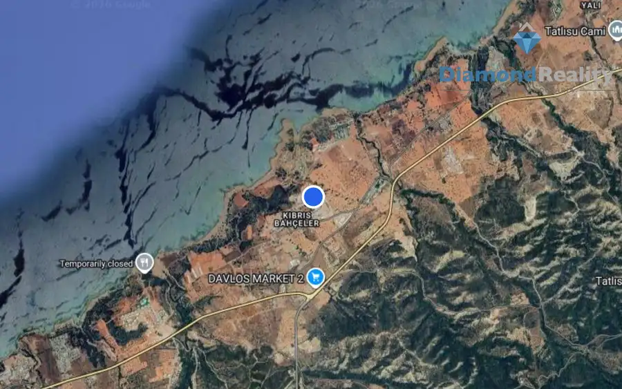
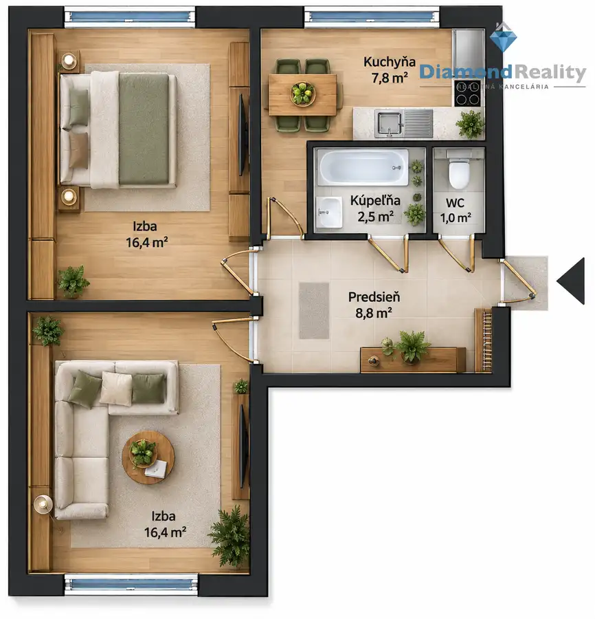
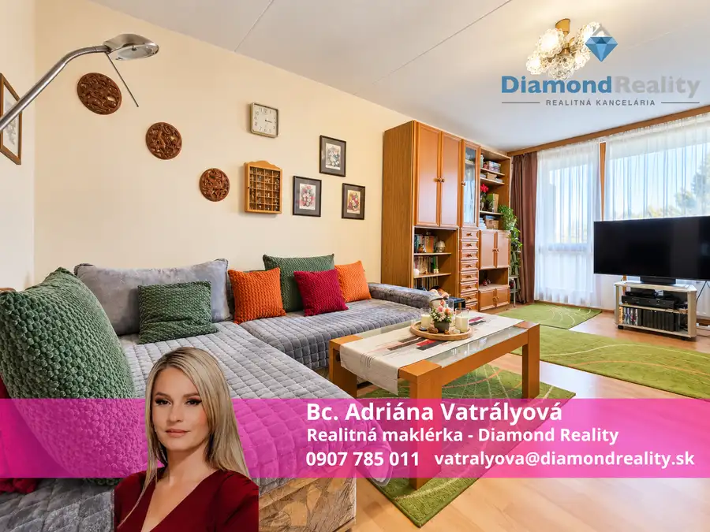

Na predaj 2 parcely / záhrady , Seňa, Košice - okolie
Seňa
- Plocha850 m²
- VlastníctvoOsobné
O nehnuteľnosti
Na predaj dve atraktívne záhradné parcely v obci SeňaHľadáte miesto na oddych, záhradkárčenie alebo investíciu do budúcnosti? Ponúkame na predaj dve samostatné parcely o výmere 490m2 a a 360m2 , situované v obľúbenej záhradkárskej lokalite v obci Seňa.Pozemky sa nachádzajú v pokojnom a vyhľadávanom prostredí, kde je množstvo celoročne obývaných chát a domov, čo zvyšuje atraktivitu aj hodnotu tejto lokality. V budúcnosti je na každej parcele možná výstavba záhradnej chatky, menšieho domčeka alebo celoročne využívanej chaty do 50 m².S kúpou parcely získate aj podiel na prístupovej ceste, ktorá je pravidelne udržiavaná a zabezpečuje bezproblémový prístup počas celého roka.Inžinierske siete a možnosti:studňa s hĺbkou cca 4 melektrina 230 V:na jednej parcele je zavedená (pôvodná) elektrina do unimobunkydruhá parcela má elektrickú prípojku v dosahu pred pozemkomdo budúcna možnosť riešenia odpadu formou žumpy alebo ČOV, prípadne napojenia na kanalizáciuTieto parcely sú ideálnou voľbou pre tých, ktorí hľadajú pokojné miesto v blízkosti obce, s výborným potenciálom na rekreáciu aj dlhodobé využitie.Cena nehnuteľnosti je 48.500,- Eur a zahŕňa kompletný právny servis a províziu RK.Pre ďalšie informácie o tejto nehnuteľnosti a dohodnutie obhliadky neváhajte kontaktovať Adriánu Vatrályovú, na tel. čísle 0907 785 011 alebo prostredníctvom e-mailu: vatralyova@diamondreality.sk .
Parametre
| Druh | Záhrada |
|---|---|
| Dátum zverejnenia | 10. 2. 2026 |
| Elektrina | Na pozemku - 230 V |
| Plocha pozemku | 850 m² |
| Typ | Predaj |
| Vlastníctvo | Osobné |
| Voda | Na pozemku - Studňa |
Kde to je


Mohlo by Vás zaujímať

BytNové10 185 000 €Na predaj 1+1 Apartmán v rezorte TWILIGHT, Severný Cyprus Reality 2-izbový60 m² 🌴 EXKLUZÍVNE NA PREDAJ – Apartmány a luxusné vily v rezorte TWILIGHT, Severný CyprusObjavte jedinečný rezidenčný projekt TWILIGHT, ktorý sa nachádza…
BytNové 177 000 €Na predaj 2 izbový byt / Dargovských hrdinov / Košice III. Dargovských hrdinov, Košice 2-izbový53 m² 2-IZBOVÝ BYT S POTENCIÁLOM – KOŠICE, DARGOVSKÝCH HRDINOVBc. Adriána Vatrályová zo spoločnosti Diamond Reality Vám ponúka na predaj priestranný…
BytNové10 249 990 €Na predaj PRAŽSKÝ 3 izbový byt s lodžiou - Lomonosovova ulica, Košice - Juh Juh, Košice 3-izbový68 m²5. podlažie 🏡 EXKLUZÍVNE | Priestranný 3-izbový pražský byt s veľkou zasklenou lodžiou | Košice – Juh, Lomonosovova ulica ✨💎 Bc. Adriána Vatrályová z Diamond…